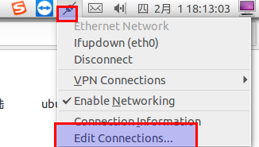
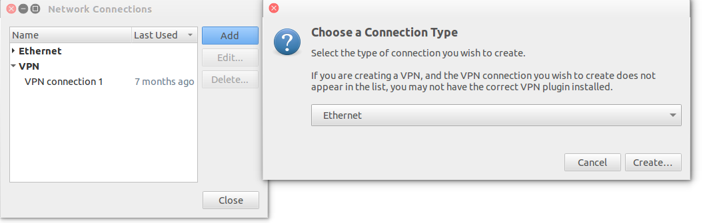
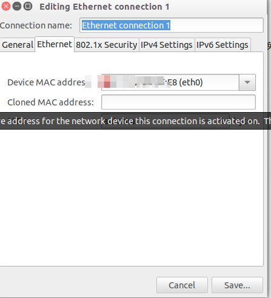
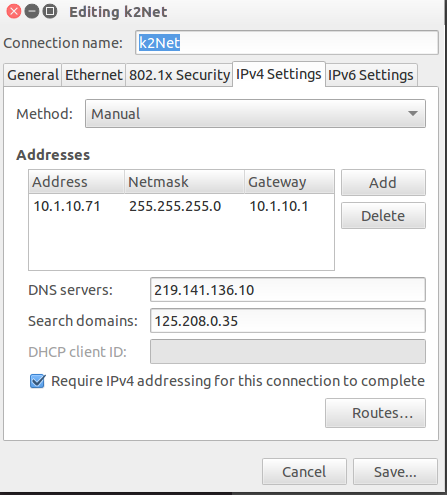

ubuntu的网络配置
图像界面配置比较简单




配置文件
ubuntu系统进行网络配置有的时候用图形界面不起作用，这种情况下可以直接修改某些启动脚本或配置文件
Ubuntu系统进行网络配置涉及到几个配置文件1./etc/network/interfaces 2./etc/resolv.conf
操纵步骤：
1.打开ubuntu的/etc/network/interfaces文件默认的内容如下：
auto lo
iface lo inet loopback
动态获取的配置方法：
auto eth0
iface eth0 inet dhcp
静态分配的配置方法：
auto eth0
iface eth0 inet static
address 192.168.0.1
netmask 255.255.255.0
gateway 192.168.0.1
根据配置要求（是动态分配还是自动获取）修改该配置文件保存。
2.添加域名服务器：打开/etc/resolv.conf文件
添加这行:nameserver 202.99.166.4
3.重启下网络
$/etc/init.d/networking restart(这条命令是重启网卡)
或者
$ifdown eth0
$ifup eth0（这两条命令是有针对性的重启某个网络接口，因为一个系统可能有多个网络接口）
4.查看网络配置的参数是不是正确（每进行一次操作都可以查看一下是不是修改了网络配置）
$ifconfig
5.看看是不是能够ping通
ping不通网关说明网络配置有问题 ping不通域名说明dns有问题
有些时候需要修改网卡的硬件地址：
方法一：
$ifconfig eth0 hw ether XX:XX:XX:XX:XX:XX
$/etc/init.d/networking restart(重启网卡)
方法二：
以上只是暂时的修改硬件地址要永久修改，直接编辑 /etc/network/interfaces 文件，在 iface eth0 inet static 后面添加一行： pre-up ifconfig eth0 hw ether xx:xx:xx:xx:xx:xx（要改成的MAC）
$ sudo /etc/init.d/networking restart（重启网卡）